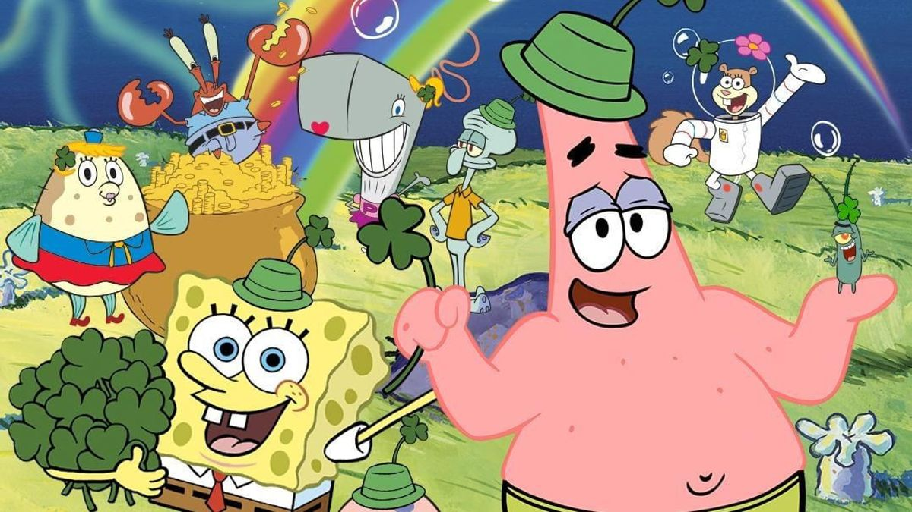

About Spongebob Squarepants
Spongebob is the coolest cartoon character ever. He's absorbent, yellow and porous. He lives in a pineapple under the sea as well! Spongebob is ever so energetic and lively throughout the day. His enthusiasm for life brings out the best in him.
Spongebob and his Friends
Spongebob's Characteristics
- He's fun and caring
- He loves his job at the Krusty Krab
- He wants to get his drivers license from Mrs. Puff really badly
Spongebob's Friends
- He's fun and caring
- He loves his job at the Krusty Krab
- He wants to get his drivers license from Mrs. Puff really badly
Spongebob's Friends
Spongebob has many friends, namely his best friend/ neighbour Patrick. He's a little slow but really fun to have around. Click the link below to read more about Spongebob's friends.